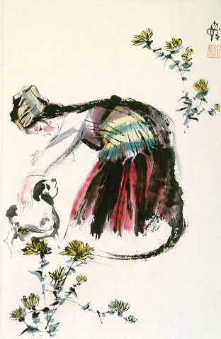

義助慰安婦 —— 李敖百件珍藏義賣藝術品（第21件） 品 名：A21. 程十髮「美女羔羊圖」 預估價：14 萬 成交價：28 萬 說 明： 當代中國大陸名畫家程十髮先生，專門畫邊疆少數民族，這幅畫上畫有美麗的少女與可愛的羔羊。我們習慣稱中華民族為五族共和，嚴格地說回族不應列入，因為他們是以宗教信仰而非種族的結合；實際上，中華民族不止五族，尚有其他少數民族散居在中國的雲南、貴州等地。他們的生態，程十髮先生給畫得風味十足。 
當代中國大陸名畫家程十髮先生，專門畫邊疆少數民族，這幅畫上畫有美麗的少女與可愛的羔羊。我們習慣稱中華民族為五族共和，嚴格地說回族不應列入，因為他們是以宗教信仰而非種族的結合；實際上，中華民族不止五族，尚有其他少數民族散居在中國的雲南、貴州等地。他們的生態，程十髮先生給畫得風味十足。